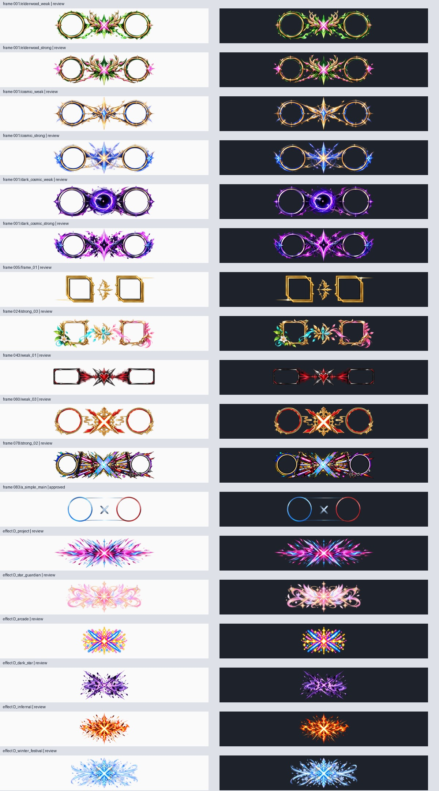

元のMarkdownを開くLoL AutoCine 統合研究・監査報告（未検証を含む第1版）
判断の要点
最優先はカメラやFXを増やすことより、出力品質と実行状態の真実性を揃えること。固定自動を安定基準にし、full_autoはサイド別承認済み旧カメラを選ぶ機能として保つ。既存highlight_director、smart_montage、reference_safeを土台に拡張する。
本体実装は変更していない。UI29の採用は未決定のまま。素材は652frameのうちapproved1、35FXは全reviewを維持した。研究推薦をユーザーの採用決定に変えていない。
作成したものと確認範囲
17報告書、70機能のCSV/JSON、438取得ソースのhash台帳、9参考ツールの一次資料比較、18素材の静的検査、6レシピ、12新機能案、品質ゲート・互換性・再開・配布・ベンチ設計を収録。
動画は20候補の一覧まで作成し、本編の点観測は2本。キル前後を連続分析完了したものは0本。このため動画20本研究とWindows実機品質検証は未完了。17ファイルが揃ったことを総合プロジェクトの全検証完了とは扱わない。
コードから確認した重要事項
- full_autoはクリップ境界で旧スタイルを選ぶ。敵の3D位置・遮蔽を認識するベストショット生成器ではない。承認なしの代替を正常な承認済み自動演出として数えない。
- 既存の自動演出と簡易採点がある。新しいSmart FXや採点を別名で重複実装しない。
- 音声必須時には開始失敗・空/短/完全無音WAVを失敗にする。過去の「音声失敗でも無音継続」という古い説明は現在の原文と一致しない。
- CPU flashは複数eventの適用窓と最初のevent中心式が異なり、後続killのpulseが弱くなる静的疑義がある。未再現なので確定不具合とはしていない。
- 近似previewと最終FFmpegは完全一致しない。radial blurやwipe等の名前も実体を説明する必要がある。
- バッジは素材37種、UI識別子はoff＋手続き描画4＋素材37の42。素材数と選択肢数を混同しない。
性能・過去テスト
過去文書の61本NVENC成功とGPU FX未確認、fresh frame約39fps等を別々に記録。144Hz目標改善のユーザー報告はあるが、最終動画60 unique frames/sの新規合格証拠ではない。10月19日の再実行込み1042/1044と、単一実行1023/1035を混同しない。今回pytest・LoL録画・GPU FX・音声聴取は未実施。現在head対象のActions API返却0件をCI合格とも失敗とも扱わない。
RTK方針
今回の監査では通常の検索と原文読取りを使用し、RTKは使用していない。自動hook・global設定は導入していない。過去のCLI出力bytes削減をWork全体のクレジット削減と換算しない。RTKの有無で研究を止めていない。
推奨順
A：実行結果schema/ログの意味→失敗clip再開→side/style/patch承認→音声・黒・fresh等の品質検査。B：FX時間窓/preview一致→控えめrecipe→同一戦闘merge/採点説明。C：bestshot、engage、音楽拍、光学flow。実装工数・性能向上率は未実測。
ChatGPTとユーザーに判断してほしい点
固定自動を当面の基準にするか、品質ゲートは警告から始めるか、最初のrecipeをCinematic/Elegant/Competitiveのどれにするか。未完了の映像研究・実機ベンチを採用前の検証として残すこと。UI29の採用決定と素材の承認は別の判断とする。
保存先は研究専用branch work/autocine-integrated-research-20261022、LoL_AutoCine/research/integrated_20261022/。コミット・全ファイルの保存照合はSAVE_VERIFICATION.jsonと配布用ZIPのSHA256記録を参照。
元のMarkdownを開く既存機能全面監査
監査範囲と証拠の強さ
最新UI比較版の読取スナップショット438ファイル、3,805,781 bytesを取得し、全件Git blob SHA-1一致を確認した。取得と原文精読は別であり、全行を精読したという意味ではない。coreの48 Pythonファイルを含み、重要経路は関数単位で原文を確認した。取得一覧はSOURCE_MANIFEST.json、実装棚卸しはFEATURE_STATUS.csv/JSONを参照。
最新基準はcodex/ui-29-implementation-20261021のfb03e0390805125fc063f4599af6c2541a653abf（2026-10-21 16:39:40 UTC）。カメラ基準feb895491ca4bc780da4aab91990f25177cd35abとcore/legacy範囲のblobを比較すると差異はcore/capture_process.pyとlegacy_app.py。UI29開発ブランチへの書込み・アプリ起動・設定操作は行わない。mainは古い別構成のため基準にしない。
状態の定義
1=実装かつ今回の実機テスト合格、2=実装確認・今回の実機未検証、3=部分実装、4=今回不具合再現。今回1と4は付けていない。過去の合格、不具合報告、静的な疑義は別欄で管理する。重複、改善、統合、隠す候補、廃止候補は独立の提案タグであり、削除決定ではない。
構造
flowchart LR
ROFL[ROFL起動・Replay API] --> SCAN[試合スキャン]
SCAN --> PROJECT[シーン・テンプレート・キーフレーム]
PROJECT --> JOB[ジョブ設定のスナップショット]
JOB --> CAM[既存カメラ＋自動選択]
JOB --> CAP[WGC・録画]
JOB --> AUDIO[LoL専用音声]
CAM --> CAP
CAP --> FX[CPU/OpenCL演出]
AUDIO --> FX
FX --> OUT[クリップ・モンタージュ・診断]
CAP --> MIRROR[固定ミラー／近似プレビュー]
特に重要な判定
| 項目 | 確認事実 | 不足・改善 |
|---|
| キル・アシスト | ChampionKillとAssistersを収集、重複を除く | イベント欠落・中断スキャンの再利用を検査 |
| エンゲージ | 独立した検出根拠はスキャナにない | 被ダメージ等の取得可能性調査、画像認識を後段提案 |
| 自動カメラ | 旧10スタイルから承認リストに基づき選択 | 可視性に基づく自律探索は未実装 |
| おまかせ演出 | kill/assist/multikillでキーフレーム生成 | 新規Smart FX提案はこの既存機能を拡張 |
| 自動モンタージュ | 簡易採点と強弱順並べ替えあり | 画質・同一戦闘・音楽拍は採点しない |
| 音声 | 音声必須時の開始・空・無音エラーは失敗 | 非ゼロだけではゲーム音の内容・AV同期は未保証 |
| GPU | NVENCとOpenCL経路は別実装 | 列挙、実行成功、負荷、品質を別々に記録 |
| 素材 | approved以外は確認用 | 原本の変更・承認昇格は行わない |
過去検証と今回検証
10月19日の集約JSONは1044件中1042pass・2環境ブロックを記載する一方、単一フル実行は1035件中1023pass・12failと記載する。再実行の集合を「最新コミット全件一括成功」に読み替えない。2件はWindows symlink権限WinError1314でassert前に停止したもの。10月13日Windows XMLの79件成功も歴史資料。今回のhead SHAに対するActions API返却は0件であり、テスト不合格の意味ではない。
今回実施：原文監査、438blob照合、Python構文AST確認、素材18点静的検査、公式資料照合。未実施：既存pytest、Windows/LoL録画、GPU FX実行、音声聴取、UI29起動。変更なしの研究作業で実機の状態を動かさない。
原文の入口
core/scanner.py:41、core/jobs.py:442、ui/highlight_director.py:33、ui/smart_montage.py:29、core/auto_qa.py:19。各機能への個別リンクはCSV/JSONに収録。
保存機能の境界
scene_projectはtemp書込み・fsync・os.replaceによるatomic保存とundo/redoを持つ。一方、録画工程全体の永続checkpointや失敗clipだけの再開とは別機能。既存のatomic project saveを新規未実装として重複提案しない。scene_keyはeventIDも含むため、eventIDが変わる再scanでの照合を追加検証する。
元のMarkdownを開く新旧カメラ・BLUE/RED・TargetLock分析
結論
旧カメラは自動カメラの実行基盤であり、削除対象ではない。固定自動は選択スタイルを保ち、フルオートはクリップ境界でside別承認済み候補を選ぶ。試合状況を映像認識してカメラを常時切り替える機能ではない。
core/smart_camera_director.py:27、core/camera.py:273、core/camera_tuning.py:12。
10スタイルを残す
| style | 役割／検査上の注意 |
|---|
| third_cinema | 三人称の演出付き。距離・FOVとロックを同時確認 |
| third | 安定追従の比較基準 |
| geo_aim | 実験的。REDの右寄りに過去の指摘 |
| cinema | キル前後のカメラ変化を確認 |
| fps | 主観風。足元・空・過度な近接を確認 |
| orbit | 実験的。0/90/180/270度を個別検査 |
| lolnam_cinema | 独自スタイル名。他社実装一致を意味しない |
| follow | 追従基準。向き・移動時の遅れ |
| cinema_top | 広い構図の候補 |
| top | 安全なトップダウン候補 |
自動選択の実際
manual/Noneは従来経路を保持。fixed_autoは選択スタイルを使用。full_autoはBLUE/RED別approvedからexcludedを引き、対象候補を絞る。複数キルは広い画角のスタイルを先に選び、単発は三人称系を優先する。候補なしではno_verified_candidate_for_side等を残し、固定対象ロックへ代替する。全候補除外はValueError。フォールバック成功を「承認済みフルオート成功」と表示しない。
座標・回転の監査
side_yawの既定BLUE=0、RED=180だけで全モードを一律反転させない。thirdの初期プロファイルはORDER yaw−12/elev37/dist1060、CHAOS yaw192/elev42/dist1170。実距離は校正・倍率・モード別方針で変わる。LIVE_FRAMING_POLICIESはサイド×スタイルの独立設定で、RED fps/geo_aim等の受容済み経路を保持する。
最新のtarget_center_rotationはコード上X=azimuth、Y=elevationとしてatan2から対象方向を計算し、roll=0、俯角14–72度へ制限する。一方camera_geometry.inspect_rigにはpitch_axis=yを確認事項とする診断が残る。過去の座標仮説を機械的な軸交換へ使わず、実際のrender応答と対象中心誤差で判断する。数学上の軸整合と人物が画面に見えることは別検査。
FOVは32–100に制限され、full_autoの複数キルでは基準60以上を保持する処理がある。キーフレームは対象相対yaw/距離zoom/FOV差分。APIだけで敵全員の3D位置・壁深度・可視性が得られるとは仮定しない。
歴史資料をどう読むか
10/20 QA文書は固定自動好評、RED geo_aim #5右寄り、full_auto承認台帳が空で12/14代替などを記載。その後144Hz目標で改善、カメラに目立つ問題なしというユーザー報告がある。これだけで全20条件（10style×2side）を最新headで合格へ変更しない。文書の映像原本を今回は直接再生していない。
追加開発案と合格条件
1. A：camera approval ledgerにside/style/patch/画面比/clipID/審査者/根拠SHAを保存。古い承認を別patchへ自動継承しない。
2. A：既存ロック経路に対象中心座標の計測を追加。対象検出なしはunknown、失敗と混同しない。画面外・回転急変の時刻を審査用に示す。
3. B：同一10秒区間を2–3候補で録り、可視性・揺れ・遮蔽を人が比較。採点が信頼できるまで自動採用しない。
4. C：短い先読みでベストショット選択。録画時間・ディスク増を評価し、固定自動へ常時戻せる。
Windows試験はBLUE/RED×10style×単発/複数/ダッシュ/障害物を段階実施。パッチ・champion・開始秒・API readbackを固定し、対象ロスト、空、地面下、180度誤反転、急回転、FOV狭窄を目視と数値で審査。許容中心誤差等はベンチ文書の提案値を実映像で調整する。既存旧カメラの設定値を同時変更しない。
元のMarkdownを開く参考ツール比較とAutoCineへの応用
調査方法
公式サイト・公式リポジトリ・操作資料を参照した。アプリ9本のインストール・実機比較はしていない。使い勝手と負荷評価は文書に基づく設計上の推論であり、実測ベンチではない。Lolnamのチュートリアルは約00:45のインストール設定画面のみ確認でき、編集全工程を視聴したとは扱わない。
| ツール・一次資料 | 確認した設計 | AutoCineへ取り込む案 | 難点・適用限界 |
|---|
| Lolnam Editor | Replay→カメラsequence/色→録画、graph editor、LUT/曲線、比較 | ゲーム映像を固定表示して相対カメラ曲線と色を分割比較 | 公式の宣伝と実機品質は別。敵座標やAutoCine側API可用性の証明にはならない |
| League Director | camera attachment、FOV、fog/DOF、sequencer、保存、キャプチャ | カメラ設定と時間軸を分離、変更前後を保存 | 手動制作に向く。ワンクリック検出・品質判定は別設計 |
| League Director NG | sequenceの移動・コピー、curve等の改良 | 複数キーのまとめ移動、原点復帰 | READMEのTODOは実装済みと扱わない。現在patch互換未実測 |
| DaVinci Resolve | 編集工程をページで分離、クリップ・速度編集 | 簡単作成→詳細編集、再利用できる演出レシピ | 多機能ページをそのまま並べると初心者の操作が増える |
| Premiere | 時間再マップと速度キーの緩急 | キル時刻を基準にした速度曲線、映像時刻とreplay時刻の対応 | 後処理retimeとゲーム内再生速度を混ぜると音声・イベントがずれる |
| After Effects | value/speed graph、複数キー操作 | アニメ6種を共通時間曲線へ、減衰を数値化 | 合成自由度を全部表に出すと操作負荷が高い |
| CapCut | 速度曲線を使う編集手順 | 短い用途別プリセットと強度の1操作 | 低fps素材を遅くしても情報は増えない。補間の破綻を別審査 |
| Filmora | 速度変更の操作ガイド | プリセット→カーブ調整、元へ戻す導線 | テンプレート依存でシーン情報を覆わないよう抑制 |
| Blender、VFX | camera DOF、追跡・マスク・合成 | 対象と背景の分離、制約付きカメラ、品質診断 | 2D映像からゲーム内深度を正確復元できるという意味ではない。3Dレンダラ移植は過大 |
採るもの・採らないもの
優先は「イベントを見つける→安定した画角→短い演出→実動画確認→書き出す」の流れ。ノード編集や全3D制作環境の再現は優先しない。AutoCine既存のhighlight_director、smart_montage、reference_safeへ段階統合し、同じ機能を別名で重ねて作らない。
負荷の見込み：グラフ・プリセット選択そのものは低い。全画面時間方向blur、光学フロー、追跡、複数候補録画は高い。各ソフトのGPU広告をAutoCineの速度保証に流用しない。各案の採用はユーザー判断であり、比較結果は推薦にとどまる。
元のMarkdownを開くモンタージュ映像調査台帳と確認範囲
重要：20本の分析は完了していない
候補20本のURL・題名・作者・検索時の公開時期を記録した。本編画面を点で確認したのは2本、キル前→瞬間→後を連続して分析完了した本数は0。残り18本はメタデータのみ。広告、シーク後の未更新フレーム、終了まで流れた再生を視聴実績に数えない。公開時期が「○年前」の候補は正確な日付未検証。題名由来の分類と実際の画面観測を区別する。
ブラウザー上で広告・シーク・更新遅延があり、時刻と本編が一致して確認できた画面のみ採用した。音声は聴取しておらず、拍合わせ・音ハメの評価はしていない。映像はダウンロード・再配布していない。
実際の確認内容
| 動画 | 確認できた本編時刻 | 画面で確認した事実 | 未確認／推測 |
|---|
| LOLNAM Cinematic Montage #16 | 約00:25.34、00:54.45、04:10.43の点観測 | 斜め俯瞰の戦闘、最初のsampleに選手名lower-third、04:10では暗めの戦闘画面 | 連続軌道、速度曲線、kill前後の全time、制作ソフト、正確なgrade値は未確認 |
| Yone - League of Legends Montage | 冒頭00:00、約01:32.47の点観測 | 冒頭Yoneタイトルと2人物、上下letterbox、01:32にTRIPLE KILL表示・戦闘・淡い粒子 | 粒子のゲーム由来/追加合成、連続camera/retime、音楽同期は未確認 |
点観測の間の全区間を見たという意味ではない。YouTubeの画面内時間表示が古い場合があり、HTML video時刻と更新後の画面を併用した。時刻は秒小数を含む概数。
AutoCineへの応用（観測と分けた設計上の推論）
選手名plateは既存kill badgeと目的が違うため、新設する場合は別overlayとして検討。title/letterboxは低負荷候補だが、LoL HUDや人物を覆わないsafe areaが必要。画角は常に狭めず、複数killでは既存cinema_top/topを比較基準にする。正確な他者camera pathやLUTの逆算は行えない。負荷見込みは2D title低、単純grade低〜中、粒子layer中、追跡や光学flow高で、実測ではない。
候補一覧（分析済み一覧ではない）
残っている審査
20候補には公式cinematic再編集・trailerと思われるものもある。まずReplay操作を使う実モンタージュかを本編で選別し、対象外は理由を記録して代替する。作者・champion・強弱・古い/新しい作品が偏らないよう追加する。各採用動画で最低2つのkill区間（前3秒→kill→後3秒）とtransition区間を実際に連続確認し、URL時刻・観測した効果・推測した方法・既存機能との対応・負荷を記録する。速度は音/画とtimecodeを見て推定と明記する。
この未了分を残したまま「最新モンタージュ20本研究済み」と報告しない。現段階のレシピはコード監査と公式制作手法に基づく設計案であり、20本分析から実証した結果ではない。
元のMarkdownを開くFXの実体・名称・プレビュー一致の監査
既存と新規を分ける
22video effect、16grade、LUT/curves、Bloom、Fog、DOF、highlight pulse、Work35候補、montage transitionが既存の入口。単純に同じ名前の追加機能を新設しない。
原文：core/effects.py:415、core/gpu_full.py:1、core/preview.py:159、core/montage_fx.py:1、core/render_fx.py:1。
| 名前 | CPU出力の実体／相違点 | 改善の方向 |
|---|
| radial_blur | tmixによる時間方向混合 | 名称を残し説明を正確にするか、真の放射状kernelを別実験 |
| zoom_blur | 拡縮crop＋tmix | 中心とkill時刻を共有、端欠けと残像を審査 |
| glitch / chroma_leak | RGBずらし・noise、適用窓が異なる | 常時適用とkill窓をUIで明示 |
| focus_blur / vr_blur / sphere_blur | 類似の全面gblur系 | 既存IDは互換維持。UI説明で違い、パラメータ共通化は内部案 |
| glint | unsharp＋eq等 | 選択的発光という説明とは分ける |
| vr_light_leak | kill窓の暖色化 | 空間的な光漏れtextureは追加案 |
| panel_wipe / stretch_wipe | 異なる時間のfadein | 真の2映像wipeとは別。名前だけで完成としない |
| mirror | hflip | ゲーム内BLUE/RED補正として使わない |
| montage soft | 連結後の明暗変化 | 重なりを使うdissolveは別設計・音声長さ検証 |
上表はCPU経路の監査であり、OpenCL版が全て同じ近似だとは断定しない。GPU/CPUの値・時間窓・色空間・合成順を同一入力で比較する必要がある。
静的な疑義：flashの複数キル
CPU式ではenableは複数event窓を作る一方、輝度のexp中心にevents[0][0]を使う。2回目以降の窓が開いてもpulseが極小になる可能性がある。これは原文上の疑義で、今回FFmpegで再現していない。修正前に2キルを十分離した無地クリップでkill±0.1秒の平均輝度を比較し、OpenCL経路と一致を確認する。連続pulseはmax/飽和制限の設計を先に決める。
優先改善案
1. A：共通event envelopeとreplay→wall clock写像を固定。イベント・カメラ・バッジ・音声に同じ時計を使う。
2. A：近似previewには「軽量近似」、厳密静止画と短い最終経路動画には「出力経路確認」と表示。既存render_exact_stillを活用し、時間方向FXは静止画で合格にしない。
3. B：Smart FXのbudgetを1killあたり主演出1＋補助1へ抑制。連続キル、集団戦、色の飽和で自動減衰。ただし既存手動設定は残す。
4. B：人物領域・HUD保護マスク。認識信頼度が低ければ全面blurや強flashを避ける。CPU/GPU転送コストも計る。
5. C：true radial、depth-aware blur、2入力transition、optical flow。別枝・別IDから試し、既存の見た目を勝手に置換しない。
負荷：LUT/色は低〜中、全面blurと時間方向混合は中〜高、光学フローとsegmentationは高。実測ではない。WindowsではFXoff基準→単独1効果→複合、CPU→GPU→GPU失敗時CPUの順で色、速度、バッジ合成、ゲーム音、所要時間を比較する。
元のMarkdownを開くキルフレーム・FX素材の品質監査
台帳と保護
assets/work_kill_assets/catalog.json:1を基準に、フレーム652=approved1＋review651、エフェクト35=review35。legacy_layers311を合わせたPNG998件がtreeに存在する。catalog内部のsource_commitは素材来歴であり、今回のコード基準SHAとは別。既存37バッジと89原本は編集・再生成・番号変更していない。
唯一のapprovedは083/a_simple_main、2520×1050 RGBA、SHA256 b1b360c15d860e1fdd12ff01af67f5c1b9693538fa6d2b5babb9c0aa3602440f。quality_scopeは静止画。動画合成と全6motionの承認を意味しない。
今回の実測
frame12/652、FX6/35を固定インデックスで抽出。18件すべてデコード成功、SHA256・台帳寸法一致。正規化したRGBAのalpha0/1–254/255割合をASSET_SAMPLE_QA.jsonへ保存した。29,567,101 bytesを読み取った。抜取りであり、未検査640frames/29FXの品質を推定しない。全998件の新規画素審査は未実施。

静止縮小表示で、円形/角形の肖像枠の違い、strongの装飾密度、淡いstar_guardianやwinter_festivalの背景依存を確認した。小さな欠け、1pixelの縁、原寸alphaゴミは縮小sheetだけでは合否判定できない。各PNGの承認は一切変更していない。
合成コードの条件
core/work_kill_assets.py:43はreview表示をopt-inにし、core/work_kill_assets.py:1等でpath/台帳/ハッシュを検証する。same themeのFX照合は利便性であり正式合格の継承ではない。reviewのportrait boxがない場合の仮配置を、正確な整合として保存しない。2520×1050 RGBAは約10.6MB、cache8だけで約85MB（10進数）の画素メモリに加えcopy等があり、652枚の原寸一括ロードは避ける。
6motion・アイコン審査
即表示・左/右/上/下スライド・ポップをそれぞれ、登場前/10%/50%/90%/静止/退場で確認。killer/victim逆転なし、肖像の円/角形切抜き、名前・体力UI遮蔽、連続キル上書き、2倍DPIでのジャギーを検査する。過去のsynthetic180frames/60fpsは形式成功の証拠でありLoL実合成の全品質保証ではない。
合格記録の設計
素材ID＋SHA256＋静止/動作/LoL合成のscope＋画面比＋motion＋killer/victim icon＋審査日時を分離。採点案：alpha/枠整合/切れ/視認/主役遮蔽/動作同期を各0–5。ただし重大欠陥1つは総合点で相殺しない。approved変更はユーザーの採用判断を待つ。実装変更案はサムネイル遅延ロード、承認フィルタ、背景切替、比較zoom。CPU合成・GPU表示の両経路で同じportrait配置を使う。
バッジ数の内訳
原文ASTの定数を数えるとASSET_STYLES=37、STYLES=42（off＋手続き描画4＋素材37）、MOTION_STYLES=6。37素材の保護と、42個のUI識別子を維持することを区別する。今回は37種の新規全画素審査を行っていない。
元のMarkdownを開くシネマティック演出レシピ案
適用の前提
以下は新規の設計プリセット案で、実装・実機審査済みではない。既存CameraPlan、highlight_director、video_effects、highlight_pulse、Work選択を再利用する。相対時刻0=キル。距離倍率/FOV差分/FX強度0–1と、秒・度を混同しない。音声はLoL専用を基準に維持する。
| レシピ | 対象条件 | キル前→瞬間→キル後の提案値 | 複数キル時 | 既存／追加 | 負荷見込み |
|---|
| Cinematic | 単発・追走、対象可視 | pre4/post3秒、third_cinema、yaw−4→3→0度、zoom0→6→0%、FOV0→−1.5→0、pulse0.25 | 3kill以上はcinema_top、FOVを狭めない | 既存chaseを土台、抑制規則を追加 | 低〜中 |
| Impact | 短い明確なキル | pre3.5/post2.5秒、キル±0.12秒flash0.12、shake0.08/0.20秒、zoom最大8% | 0.5秒以内は重ねず強い方1回、flash連発を抑制 | 既存impact/FX、共通envelope追加 | 中 |
| Elegant | 色とキャラクターを見せる | pre5/post3、yaw最大±3、pulse0.10、bloom0.12、flash/shake0、LUT強度0.20 | 画角を広げカットを少なく | 既存LUT/curve/バッジ、露出保護追加 | 低〜中 |
| Competitive | プレイの理解優先 | pre4/post3、top/follow、速度1.0、FXoff、frameoffまたは既存小バッジ、HUD選択保持 | 同一戦闘の時系列を保持 | 既存機能中心。品質基準としても保存 | 低 |
| Montage | 複数の見せ場を短く並べる | pre4/post3を起点、±0.8秒を基準1.0→0.65→1.0、cut優先、FX主1＋補助1 | 重複区間を統合、climax順は手動pin優先 | 既存smart_montageを拡張、音楽拍合わせは新規 | 中〜高 |
| Low-load Cinema | 低性能・非対応GPU | top/third、pre3/post2、色補正のみ、preview540p、出力1080p60維持 | 長い戦闘を短く選び直し、無断低fps化なし | 既存CPU代替＋負荷profile | 低〜中 |
時間と音声
ゲーム再生速度の変更は録画のwall timeを変える。キルのreplay秒をそのまま出力秒へ入れない。録画中観測によるevent_video_secondsを使用し、後処理retimeを重ねる場合は写像を合成する。音声のpitch/retimeをどの層が担当するかを明示し、時間軸は1種類に正規化する。
合格までの手順
FXoffの同じ区間を比較基準にし、BLUE/RED単発、3連キル、集団戦、壁際で各レシピを比較する。対象可視性・キル瞬間の理解を第一、滑らかさ・色・演出はその後に評価。低負荷案も出力仕様1080p60を黙って下げず、処理時間の増加として扱う。未承認Work素材は確認用のまま使い、公式プリセットの既定素材へ自動採用しない。
元のMarkdownを開く新機能構想と既存機能の重複整理
新規という名前で既存機能を増やさない
既存smart_montageの簡易score、highlight_directorの自動キー生成、reference_safeの色・テンポ特徴、scene_projectの保存を先に活用する。以下はそれらの拡張または新しい検査層。全件提案であり、実装開始していない。
| 案 | 既存との差分・必要入力 | 変更単位と影響 | 負荷／難度 | 優先 |
|---|
| 品質ゲート付き書き出し | exit0と内容合格を分離、映像・音声の検査結果 | jobsの外側にpostflight。失敗ファイルを成功一覧へ混ぜない | 低〜中／中 | A |
| 失敗シーン再開 | ジョブfingerprint・成功clip hash・段階checkpoint | 既存res.failedを永続台帳へ。二重作成を避ける | 低／中 | A |
| カメラ承認台帳 | side/style/patch別の映像審査scope | 既存approved/excludedを構造化。旧カメラ維持 | 低／中 | A |
| ベストショット | 複数候補映像と対象可視性採点 | directorと撮影job間のplanner。対象認識失敗はunknown | 高／高 | C |
| シーン品質スコア | 既存kill数加点に遮蔽・欠落・情報量を追加 | smart_montage拡張。根拠をUIに表示し手動pin優先 | 中〜高／高 | B |
| 同一戦闘マージ | 時間区間重複＋対象＋イベント集合 | scannerを壊さずscene planning層。二重カウント防止 | 低／中 | A |
| 自動カット | 安全な戦闘前後境界とテンポ | 新scene boundary detector。キル・音声を途中切断しない | 中／高 | B |
| Smart FX budget | 既存自動演出に強度上限・複数kill抑制 | 共通envelope。手動overrideを保存 | 低〜中／中 | B |
| チャンピオン・テーマ提案 | champion/skin情報の可用性＋素材承認状態 | Work palette提案のみ。未承認を自動昇格しない | 低／中 | B |
| 参考映像プリセット2.0 | 既存色/差分解析に信頼度・対象区間選択 | LUT/tempo候補。3Dカメラそのもののコピーを約束しない | 中／中〜高 | B |
| エンゲージ検出 | ChampionKill以外の戦闘開始根拠 | 可用データを調査後、画像/音の検出と手動修正 | 高／高 | C |
| 音楽拍合わせ | 音声onset/beat推定・ゲーム音保持 | 推定誤差を表示。既存BGMミックスとは別 | 中／高 | C |
UIへの接続
初心者には1つの推奨レシピと「作成」。詳細は採点根拠、代替理由、素材の承認scope、失敗シーンだけの再試行。候補UI29のどれでも同じbackend状態を使う設計案とし、採用画面は決めない。新しい検査が既存ジョブを阻害しないよう、最初は報告のみ、次に警告、十分な精度が得られてから停止ゲートへ昇格する。
元のMarkdownを開く自動動画品質検査の設計
既存の自己診断と追加する内容検査
core/auto_qa.py:19は依存・FFmpeg列挙・合成・API等の検査。映像中の対象・時間・音声内容をすべて保証するものではない。以下は追加設計。検出と修復を分離し、unknownをpassに変換しない。
| 検査 | 入力／方法案 | 誤検出・限界 | 修復案（自動適用前に記録） | 負荷 |
|---|
| 黒画面 | 輝度率・継続時間、blackdetect | 暗い場面/意図的fade | 該当秒再録画候補。fade区間は別扱い | 低 |
| フリーズ・drop | capture frame_id時刻＋freezedetect | 静止場面では画素一致が正常 | fresh低下を診断、再取得・再録画 | 低〜中 |
| 対象画面外 | 対象追跡boxとconfidence | エフェクトや透明化で検出不能 | 信頼度低はunknown。topへ候補変更 | 高 |
| 左右逆転・ロック外れ | API side/style/pose＋対象画面位置 | hflip演出、追従中の向き | 一律軸反転を禁止し審査へ | 中〜高 |
| 過回転・過zoom | yaw/FOV/距離の速度・加速度、被写体サイズ | 急なダッシュは正常の可能性 | キー値を制約し再プレビュー | 低〜中 |
| 遮蔽・地中 | 対象可視率＋画像サンプル | depthがないので厳密3D遮蔽判定不可 | 広角候補を提示、低confidenceは人審査 | 高 |
| AV同期 | 同一時計の開始差、既知cueの音・画相関 | 音のないkill、BGMで曖昧 | 開始offset修正案、全体のstretchは勝手にしない | 中 |
| 無音・音割れ | astats/silencedetect、stream有無 | 静かな区間は正常、無音バイト検査とは別 | ゲーム音必須なら失敗、BGMだけを代替しない | 低 |
| 過露出・連続flash | 高輝度画素率と変動・event窓 | ゲーム本来のスキル発光 | FX強度減衰案。健康安全の適合認証とは扱わない | 低〜中 |
| 合成ずれ・切れ | 素材box/alpha bounds、icon ID対応 | 透明な余白は正常 | 承認portrait boxへ戻し、原本は変更しない | 低 |
| 不自然なcut | シーン境界とevent余白、画面差分 | 意図したhardcut | 区間を延長、重複イベントを統合 | 中 |
| 色崩れ・モノクロ | 入力出力の色統計・参照chart | 意図的grade、暗い場面 | FXoff基準と比較、原因経路を隔離 | 低〜中 |
参考：FFmpeg filtersには黒・静止・無音・音量統計の基礎検出がある。人物の正しい同定やゲーム音の意味を保証する機能ではない。
結果schema案
clip_id, input_hash, template_hash, patch, actual_encoder, actual_fx_path, metric, unit, interval_video_s, replay_s, threshold_version, status(pass/warn/fail/unknown), confidence, evidence, suggested_action。再検査しても旧結果を上書きせずrun_idを付ける。閾値はscene typeごとに版管理。
導入と合格条件
最初は黒/stream/音声長/fresh比など説明可能な検査から。正常・意図的暗転・静止・バグ入りを各20例以上収集し、clip単位と時間窓単位のprecision/recallを別算出する（必要標本数の設計案）。テストと閾値調整用映像は分離。誤検知で正常クリップを無限再試行しない。再録画は最大1回等の上限と理由を明示し、人が元映像へ戻せる。機械合格を芸術品質合格と同一視しない。
元のMarkdownを開くLoLパッチ互換性とAPI依存の監査
何を保証できるか
今回LoLクライアントへの接続は行っていない。現行パッチ番号もローカル実機から取得しておらず、互換済みパッチ一覧は作れない。Riot Replay FAQはリプレイがpatch cycleで失効すると説明する。古いroflを新patchで必ず再生できる設計にはしない。
依存点と予防策
| 依存 | 起き得る変化 | 事前検査・代替案 |
|---|
| ROFL/ゲーム版 | リプレイ起動不能 | 版不一致を区別し原因表示。ゲームファイルを自動改変しない |
| Replay API playback/render | field型・意味・対応範囲 | read-only schema probe→制限値付き最小操作を別実機試験 |
| Live Client events/playerlist | イベント欠落・識別名 | eventID/時刻/killer/victim/assistを保存し欠落はunknown |
| camera axes/FOV/attach | 対象が空や地面へ | side/style/patch別承認。旧承認の無条件再利用なし |
| HUD/DOF/Fog | 設定無効・復元不能 | 対応fieldを個別probe、復元失敗をログに残す |
| LoLプロセス・ウィンドウ | PID切替、最小化、権限差 | 実LoL process treeを検証、WGC freshと別にチェック |
| 音声 | 出力デバイス・OS API対応 | プロセス音声helperの実行試験。全体録音へ代替しない |
| champion icon/skin | Data Dragon版差・欠落 | 既存キャッシュ＋欠落用プレースホルダ、別人iconにしない |
core/replay_api.py:1はlocalhost HTTPS2999へのserial access。公開Web APIとローカルReplay APIを同一扱いしない。Riot LoL developer docsを仕様の入口とし、欲しい敵3D位置やdepth mapが存在すると推測しない。POSTのタイムアウトは「未適用」と限らないのでreadbackしてから再送を決める。
サポート台帳と試験
OS build/LoL patch/Replay patch/GPU driver/FFmpeg hash/AutoCine SHAを1行へ保存。patch更新時は起動→player→scan→BLUE/REDロック→FXoff→音声あり10秒→復元の順。未試験patchは「未検証」であり「非対応確定」ではない。実機試験はユーザーの開発・自動テストが走っていない時に別途実施する。
Riot方針の確認
General Policiesは製品登録・審査、対応サービスの利用、不公正な優位を避けること等を要求する。今回それらへの登録状況は確認していない。Legal Jibber Jabberもファン制作物と素材利用の条件を定める。Replay APIを使えることだけで配布・収益化・他者映像/BGMの利用許諾まで確定しない。公開・配布段階に適用条件を再確認するための確認項目であり、今回の研究を止める承認フローではない。
元のMarkdownを開くワンクリック制作の成功率設計
成功の定義
「ボタン処理が終了」「MP4が存在」「FFmpeg exit0」「映像とLoL音声が正しい」を分離する。成功率を実測していないため今回の数値は出さない。分母は開始要求数、互換環境で開始できた数、clip試行数をそれぞれ保存し、途中キャンセルを除外するなら定義を添える。
| 段階 | 確認と現在の入口 | 失敗時の設計案 |
|---|
| 1 接続 | Replay API、ゲーム/ROFL版 | 原因分類、接続だけ再試行 |
| 2 対象固定 | Player snapshot | 別対象へ自動切替しない |
| 3 全体scan | completeフラグ、元イベント | 中断scanを完全扱いしない |
| 4 シーン選択 | チェック・pin・並び | 選択状態保存、再scanで無言リセットなし |
| 5 設定確定 | template/素材ID/hash | 入力を凍結しジョブfingerprint作成 |
| 6 環境事前検査 | 空容量・出力権限・helper・NVENC | 書出し前に検出、CPU代替理由を表示 |
| 7 seek/warmup | 新規frameとreplay進行 | 既存の制御された復旧を活用、無限再試行なし |
| 8 camera/HUD/FX | 適用readback・元状態 | 失敗時復元、未承認自動cameraは代替明示 |
| 9 音声開始 | LoL helperと実WAV | game_audio必須なら失敗。全体録音禁止 |
| 10 録画 | wall/replay/frame clock | 停止・キャンセルで資源解放と状態復元 |
| 11 FX/合成 | actual path、色、asset hash | CPU代替の品質確認、失敗raw保持方針 |
| 12 結合/検査 | clip成功集合、AV/黒/fresh等 | 一部失敗を完全成功表示しない |
| 13 保存/報告 | manifestと出力hash | atomic確定、成功clipを使って失敗分だけ再開 |
既存の保護
core/jobs.py:442は音声開始失敗・空/短/完全無音WAVを失敗にし、HUD/FX/mirrorを復元する。core/jobs.py:618はclip単位例外をres.failedへ記録して継続する。スキャン停止、録画停止、結合失敗を同じエラーに丸めない。
追加する永続job台帳案
job_id、source replay識別子、patch、player、scene interval、settings hash、asset hash、工程、attempt、output hash、error class、取消理由。出力はtmp→検査→renameで確定。途中再起動で同一入力の成功clipを二重生成せず、入力が変わった場合は旧結果を再利用しない。録画・API POSTは副作用があるので単純retry decoratorを付けない。
Windows実機試験
正常2scene、1scene音声失敗、2scene目GPU FX失敗、容量不足、LoL閉じる、seek停止、キャンセル、再起動再開を試験。音声失敗で無音成功しない、成功済みclipが残る、設定/HUD/camera復元、再試行は失敗clipのみを合格条件にする。現状で全項目が実装済みという意味ではない。
元のMarkdownを開くGPU・録画・音声・出力性能の監査
4種類のFPS・GPU結果を分離する
1. カメラ制御の送信/更新Hz。
2. ミラーUIの表示FPS。
3. WGC等が取得した新しいframeの実効FPS/fresh ratio。
4. 出力containerのFPSと重複/補間を除いた実映像情報。
NVENCは圧縮、OpenCLは映像加工。CPU合成＋NVENCでも動画ファイルはGPU encoderを使用できる。NVIDIA Video Codec SDKはencode/decodeの仕組みを提供するが、AutoCineの全処理GPU化の証明にはならない。
過去ログの解釈
10/20文書には61出力exit0/NVENC、GPU FX confirmed=false全61、12件ffmpeg_missing_program_opencl、fresh ratio62–68%/実効約39fps等が記録される。その後の計測33.12fps、41.42fps、144Hz目標改善という異なるrunがある。別runの数値を1条件の速度向上率へまとめない。OpenCLgrainの688×387オフライン中央値22.24ms/p95 24.9msも1080p全処理60fps合格ではない。
今回これらの録画・計測は再実行していない。最新UI headにあるcapture_process変更を含め、実効改善の断定には新しい同条件の記録が必要。
計測計画
| 項目 | 記録値 | 判定上の注意 |
|---|
| capture | frame_id/QPC, delivered/fresh/duplicate, p50/p95待ち | 同一画面で画素一致しても新規取得の場合がある |
| mirror | 描画回数/実frame回数、UI遅延p95 | 高い目標値だけを成果にしない |
| camera | API latency/slow call/drift/pose | 送信Hzを上げてもfresh映像が増えるとは限らない |
| FX | requested/supported/actual path、filter名、fallback理由 | GPU利用率だけで個別filter成功を証明しない |
| encoder | 実encoder、driver、FFmpeg hash、encode時間 | 列挙と3秒実encode成功を分離 |
| audio | LoL PID/tree、WAV長、start offset、peak/RMS、AVずれ | 他アプリ音が入らない対照試験が必要 |
| 全体 | wall time/映像秒、CPU/GPU/VRAM/RAM、temp disk | warmup・capture・FX・muxを分ける |
音声の環境条件
core/audio.py:1はnative helperを使う。legacy endpoint loopbackが残っていても自動代替として使用しない。Microsoft application loopback sampleの最小条件はWindows build20348で、すべてのWindows10が対応する意味ではない。実際のOS機能probeを優先。LoLが無音の時はloopbackも無音になり得る。
性能改善の推薦
A：重複待ち・clock drift・frame queueを先に計測。bounded queueと古い表示frame破棄はmirrorに有効でも、録画frameを勝手に落として無記録にしない。B：grain/blur等の重いFXを単独最適化、LUTと合成順の共通化。C：ゼロコピーと複数GPU対応は転送コストを証明してから。GPU非対応時CPUは出力品質を守り、遅くなる理由を表示する。1080p60方針を黙って30fpsへ変更しない。
元のMarkdownを開く他PC・Windows配布の調査
現状と方針
今回配布exeをビルド・起動していない。既存START.bat、音声helper構築経路、FFmpeg探索、設定保存を維持する。UI29のWebView2起動も別開発のため、研究側で置き換えない。
推奨は最初にone-folder portable版を別ビルド枝で検証し、成功後にinstallerを比較する。PyInstaller公式はPythonランタイムを含む配布と、OS/bit数に依存するビルド、動的import・追加データの手動指定を説明する。Python不要化は可能性の調査であり、本アプリの完成済み配布物ではない。
| 要素 | 同梱/事前検査案 | Windowsで必要な試験 |
|---|
| Python/Tk/numpy/Pillow | 固定版bundle、hidden imports | Python未導入・新規user・オフライン起動 |
| FFmpeg/FFprobe | 版/hash/ライセンス・filter構成一覧 | NVENC実行とCPU代替、OpenCLは別probe |
| native audio helper | 対象arch・必要runtime、ビルド入口維持 | OS build/API対応、LoL PID限定・他アプリ音遮断 |
| WGC/共有メモリ | bundle内のworkerを明示 | 最小化・再起動・複数monitor・権限差 |
| WebView2 | 採用UIに必要ならruntime条件 | 未導入時の説明、既存起動経路の保持 |
| 素材 | 承認状態とhash manifest | 652原寸一括ロードしない、欠落時にレビュー素材を代用しない |
| 設定・project | ユーザー書込領域を分離 | 日本語/空白パス、read-only配置、長いパス |
| driver/GPU | 機能probeを保存 | NVIDIA旧/新、Intel/AMD、GPUなしCPU（対象範囲の提案） |
| 画面 | 1366×768/1920×1080/125–200%DPI | 数値欄・固定preview・ログ導線が隠れない |
起動診断案
ローカル起動→データ読取→書込権限/空容量→FFmpeg→encoder/FX→音声API/helper→LoL接続の順。LoL未起動はアプリ起動失敗にしない。依存downloadや管理者設定を無断実行する設計にはしない。
更新・削除・診断
アプリ版とプロジェクトschemaの移行を分離。更新前backupとrollbackを残し、アンインストールで映像・素材原本・projectを削除しない。診断は個人パス、ユーザー名、ローカル録画、アカウント識別子を公開Gitへ自動送信しない。収集対象と保持期間を表示し、共有用に匿名化した最小レポートを作る。ライセンス一覧とFFmpeg配布条件の確認もbuild工程に含める。
元のMarkdownを開く映像品質ベンチマーク設計
比較単位
同一ROFL/patch/player/開始終了秒/出力1080p60/音声条件/機材/設定hashを固定し、FXoff→cameraだけ→FXだけ→frameだけ→複合の順で比較する。録画毎にゲーム時刻と壁時計が異なるため、killのvideo時刻を記録し位置合わせする。今回ベンチ映像の実測は0本。
最小シーンセット案
| ID | BLUE/RED条件 | 狙い |
|---|
| S01/S02 | 単発kill各side | 基本ロックと音声同期 |
| S03/S04 | 2〜3連kill各side | 複数pulse・frame重複・wide構図 |
| S05/S06 | 集団戦各side | 主役可視性、情報量、FX抑制 |
| S07/S08 | 壁・タワー・草むら各side | 遮蔽・校正・地中 |
| S09/S10 | dash/移動skill各side | 追従遅れ・急回転 |
| S11/S12 | 静止→移動・seek復帰各side | fresh検知とwarmup |
全camera×全FXの総当たりを最初から回さず、10camera×両sideの基本20条件、代表scene、問題箇所の組合せへ拡張する。低負荷/高負荷profileとGPU失敗時CPUを含める。
客観指標（初期閾値案、未承認）
| 指標 | 提案判定 | 注意 |
|---|
| 出力 | 1920×1080、60/1fps、全stream decode成功 | container fpsだけでは滑らかさを判定しない |
| fresh capture | 取得fresh ratio≥0.95を目標、p95間隔≤33.3msを参考 | capture時計を使用。閾値は実機で調整 |
| 音声長 | AV長差≤100msを暫定、既知cueでoffset≤80ms目標 | 可変speedの時間写像、codec delayを考慮 |
| 黒/フリーズ | 意図したfadeを除き0.25秒以上を要審査 | 静止画面は正常であり自動failにしない |
| 対象位置 | 対象検出confidence十分時、画面外0.2秒以上を要審査 | 中心から30%ずれ等は構図により正常 |
| 色 | FXoffでchart差分、意図したgradeとの差を比較 | SSIM/PSNR低下を演出失敗と直結しない |
| 素材 | hash一致、ID/portrait整合、cutなし | 静止合格とmotion合格を分離 |
人による審査
対象の見やすさ35%、プレイ理解25%、滑らかさ20%、色/演出15%、切替5%の提案。0–5評点、同一シーンの順番を伏せた比較、重大な対象ロスト/無音/破損は点数で相殺しない。好みの評点と不具合を分け、最低2人の評価が割れたら理由と区間を保存する。ユーザー採用を平均点で自動確定しない。
保存物
run manifest、元/出力hash、環境、設定、イベント時間写像、計測CSV、失敗原文、審査用短区間、代表still。生のユーザーパス・音声・全試合映像を公開リポジトリへ自動保存しない。1回の良好結果ではなく各条件3回を初期案とし、中央値と範囲を示す。
元のMarkdownを開く統合評価と推奨開発順序
推奨順（採用決定ではない）
| 段階 | 優先 | 小さい変更単位 | 完了判定 | 主な危険 |
|---|
| 0 基準保存 | A | SHA固定、既存テスト原文、実機manifest | 同じsceneを再現できる | 別枝の変更を混ぜる |
| 1 真実性 | A | GPU/encoder/fresh/表示FPS/音声結果分離 | 実ログとUI表示一致 | 列挙成功を実行成功にする |
| 2 安定した制作 | A | job台帳、失敗clip再開、停止/復元 | 正常2scene＋故障注入＋再開合格 | 無限retry・二重出力 |
| 3 カメラ品質 | A | side/style/patch承認台帳、既存経路回帰 | 20基本条件と代表scene審査 | 旧camera削除・一律軸反転 |
| 4 出力品質 | A | 黒/音声/時刻/素材postflight、flash複数event疑義再現 | 検出誤差を測り警告から導入 | 正常fade/静止を誤判定 |
| 5 演出改善 | B | recipe/Smart FX budget、preview parity、戦闘merge | 同一scene比較で内容が見やすい | 既存と重複・色崩れ |
| 6 制作効率 | B | 参考特徴の信頼度、theme提案、採点説明 | 手動pin/素材承認を維持 | 他者映像のcameraを正確復元と誤解 |
| 7 高度研究 | C | bestshot/engage/beat/光学flow | 認識精度と負荷が実測で有利 | 処理時間・誤認識増 |
| 8 配布 | A/B | one-folder、非対応環境probe、rollback | Pythonなし他PC試験 | 音声helper/runtime欠落 |
実装工数は測定しておらず日数見積りは置かない。難度はFEATURE_STATUS.csvに相対値で記載。最初の実装単位は「性能結果の意味の統一」と「音声を含む失敗表示の一致」を推奨する。派手な新FXやカメラ全面置換から始めない。
採用前に判断する点
1. 固定自動を安定既定とし、full_autoは承認候補のある条件だけ使う方針。
2. 品質ゲートを最初は警告として導入し、精度が測れた項目だけ停止へ昇格する方針。
3. レシピの優先：Competitiveを比較基準、Cinematic/Elegantを最初の候補、Impact/Montageは複数kill抑制後。
4. 映像研究を20本の時間区間審査へ追加拡充すること。未視聴を分析済みにしない。
UI29の最終採用は未決定。E Flow/A Studioを含め全候補を残し、このロードマップで画面採用を決めない。素材承認やキルフレーム/FXの新制作も今回開始しない。
元のMarkdownを開くCodex向け実装・検証指示資料
この資料の使い方
採用後に別開発依頼として使う設計資料。今回実装は行っていない。基準SHA、実機環境、進行中UI29作業との調整を再確認し、最新へ移す時はこの資料と変更差分を照合する。歴史的v5.8.5引継ぎより現在の原文と新しいQA記録を優先し、矛盾を残す。
| 変更案 | 既存接続先 | 互換性・禁止事項 | 検証 |
|---|
| job永続台帳 | core/jobs.py run_auto_edit / ui/scene_project.py | UI threadで設定snapshot、workerからTk参照禁止 | failure/cancel/restart、成功clip hash再利用 |
| 実行経路表示 | effects.encoder_args / gpu_full / diagnostics | requested・supported・actual・fallbackを別field | GPU不在・列挙のみ・実行失敗・CPU代替 |
| camera承認 | smart_camera_director.decide_camera | 10旧style保持、side/style/patch別、未知は代替 | manual/None後方互換、全候補除外、BLUE/RED |
| イベント時計 | jobs ClipTake.effect_events/qa_event_times | replay秒とoutput秒を混ぜない | 可変speed、seek、2kill、音声offset |
| FX一致 | effects._build_video_effect_filters / preview / gpu_full | 共通値・seed・適用順。旧ID/プリセット維持 | CPU/GPU/厳密動画、2kill flash |
| Work素材 | work_kill_assets / kill_icons / work_gallery | 652review区別、37badge/89原本保護、承認は別操作 | 全IDroundtrip、portrait box、6motion |
| QA postflight | auto_qa拡張とは別の内容検査層案 | 既存selftestのpass意味を変えない | 暗転/静止の誤検出、unknown表示 |
| scene planning | smart_montage / highlight_director | 手動pin優先、既存scoreを再利用 | 同一戦闘mergeと重複排除 |
| 配布 | START.bat / helper / FFmpeg探索 | native音声と既存起動入口を残す | Pythonなし、新規OS、DPI、権限差 |
最初の小さいPR案
PR1は結果schemaと表示の整合、PR2はjob台帳と再開、PR3は承認台帳、PR4は内容QA警告、PR5はレシピ/FX時間窓。各PRは個別rollback可能にし、UI全面書換えやGPUエンジン全置換を混ぜない。
回帰条件
チェック済み1/2scene出力、色維持、LoLゲーム音のみ、AV同期、TargetLock/Orbit、BLUE/RED、HUD/DOF/Fog復元、GPU失敗CPU代替、キャンセル、ログ匿名化。テストの失敗・例外はRTK要約のみで判断せず原文を添える。環境未対応はskip理由と未到達assertを分ける。Windows symlink権限不足をアプリ不具合と誤分類しない。
証拠を残す形式
各変更にsource SHA、test SHA、環境、設定hash、コマンド/終了code、失敗原文（匿名化）、実動画の確認秒、known limitsを記録する。passが人工映像か実LoLかを必須fieldにする。GitHub Actions0件をCI合格と記載しない。ユーザー環境のログ・録画は許可なく公開しない。
作業保護
この研究ブランチは研究専用prefixに追加する。UI29比較のコード、実験素材、既存camera/FX/audio/testのファイルへ変更を加えない。既存の研究推薦は採用決定ではない。新しい実装依頼が来るまで設計案のまま保持する。